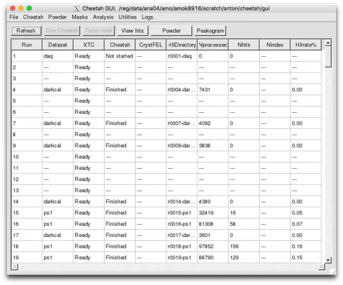

User interface
Cheetah is divided into two separate parts:
1) A graphical user interface for interacting with data, starting analysis jobs, monitoring status and viewing output,
and
2) A data processing program which runs separately, ideally on a batch farm, for performing the data processing.
Each part can function without the other, although they work best together.
The purpose of the GUI is to present results in a convenient form, provide an overview of different data sets in an experiment, and send commands to the command line so you do not have to type them in manually. Commands are echoed to the console (ready for cut-and-paste elsewhere).
This makes it possible to:
-
-Run the GUI separately at home to view data from many experiments without having to install the computing part.
-
-Modify the GUI for experiments at a different facility while maintaining a familiar look and feel.
-
-Start processing from the command line or from a shell script (eg: if working on a low bandwidth connection).
-
-Launch analysis or data visualisation from the command line, or re-use tool such as the CXI file viewer in different ways if desired.
-
-Use a different data processing backend by modifying what is sent to the command line

In June 2016 the Cheetah user interface was completely re-written in Python.
Most of the familiar behaviour is found in the same places, but some things may behave just a little differently.
The move to Python improves portability and makes the GUI easier for others to modify and extend for new applications.
The GUI uses a standard Anaconda python 3.x installation (with PyQt4 and pyqtgraph). Try it at home.
Quick start
First make sure the cheetah-gui is in your path by sourcing the appropriate setup file, then launch the GUI:
At SLAC
> source /reg/g/cfel/cheetah/setup.sh (or setup.csh)
> cheetah-gui
At CFEL
> module load cheetah-gui
> cheetah-gui
Note: Both of the setup scripts do not much more than add the cheetah-gui location to your path.
cheetah-gui itself is actually a shell script which sets paths and environment variables for an Anaconda python3 installation then calls the cheetah-gui.py. This avoids affecting the rest of your setup or causing conflicts with other Python versions. Modification of this script to get it to work at home (or on your laptop) is trivial.

If the GUI starts without error, you will be presented with a dialog box to select which experiment to move to. All past experiments you have previously looked at are listed for convenience. If the experiment is not already in the list it can be added using the 2nd button - simply navigate to the cheetah/gui/crawler.config file for the new experiment. Or set up a new experiment using the 3rd button.
After this, the table of runs and processed (or unprocessed) data should appear, similar to the screen shot at the top of this page. More detail on processing options is given on the following pages. If in doubt, follow the instructions for LCLS as this is the most tested and frequently used example.
Note: The list of experiments is saved in the file ~/.cheetah-crawler, one line per experiment. This file can be edited manually if needed.